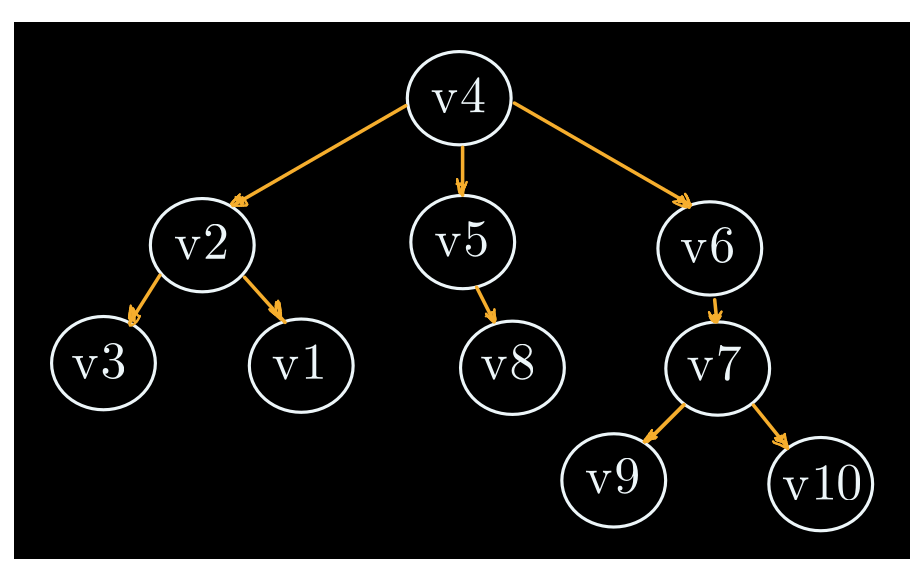
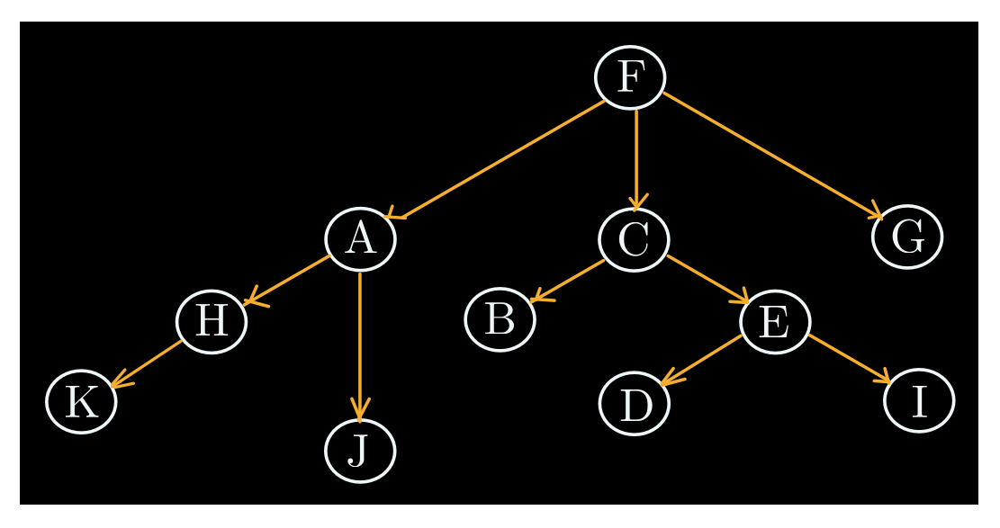
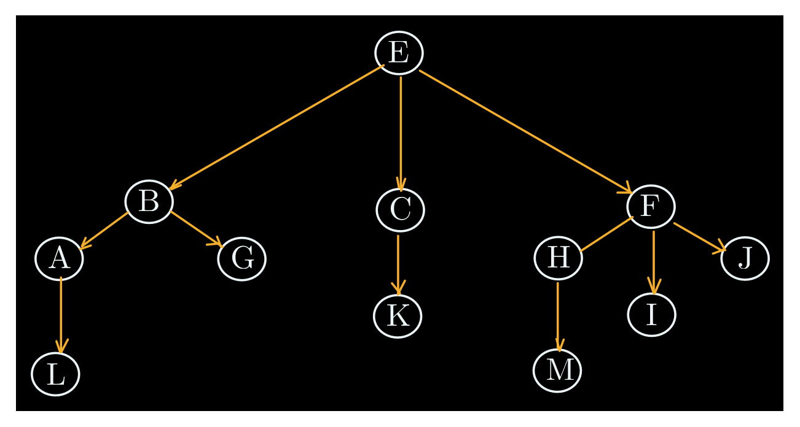
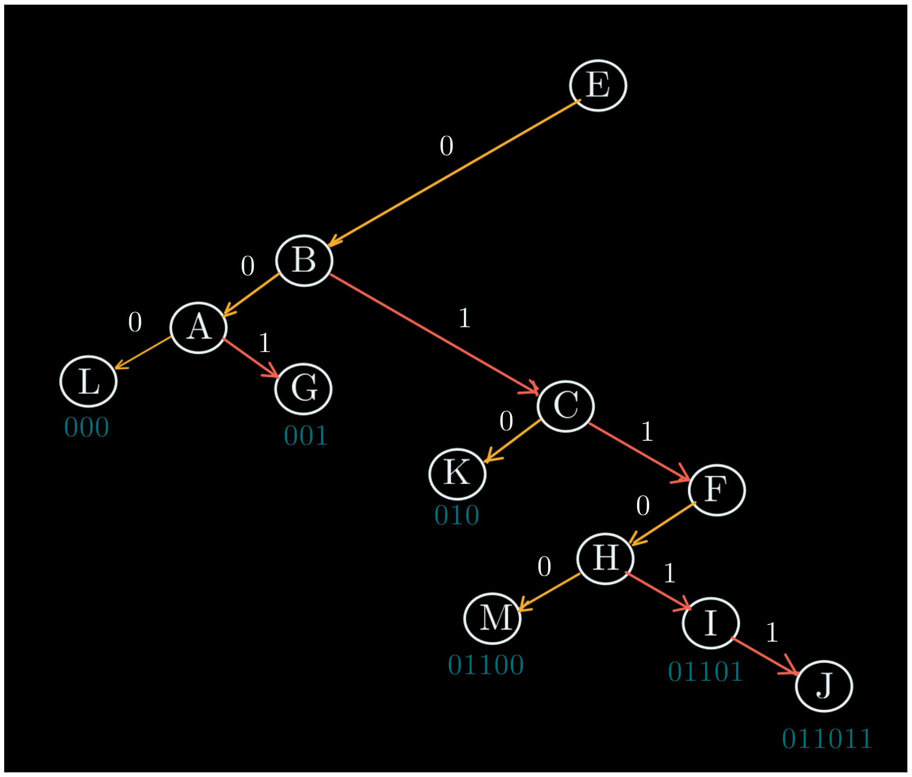

Sea A=\{ v_1, v_2, v_3, v_4, v_5, v_6, v_7, v_8, v_9, v_{10} \} el conjunto de todos los vértices de un grafo T tal que:
T = \{(v2, v3 ), (v2, v1 ), (v4, v5 ), (v4, v6 ), (v5, v8 ), (v6, v7 ), (v4, v2 ), (v7, v9 ), (v7, v10)\}
Se pide
Mostrar que T es un árbol, además de su raíz, altura, hojas y tipo de n-árbol que es.
Resolución
Se puede notar, primero que nada, que el set T es un set de pares ordenados, esto quiere decir que, para un par de vértices de T cualquiera (tómese (a, b)), entonces (a, b) no necesariamente es igual a (b, a).
Esto quiere decir que estamos ante un árbol dirigido T que se ve así:

Podemos decir que es un árbol puesto que cumple con:
El nodo raíz del 3-árbol es v_4, su altura es 3. Además, sus hojas son el conjunto A tal que:
A = \{ v_3, v_1, v_8, v_9, v_{10} \}
Dado el árbol T tal que:
T = \{ (B, C), (F, E), (F, I), (F, M), (A, G), (A, H), (C, J), (D, B), (D, F), (B, A), (I, K), (I, L), (M, O), (M, P), (P, Q) \}
Se pide
Resolución
El 3-árbol dirigido T de raíz D se ve así:

Para armar el árbol binario posicional del dígrafo podemos empezar por conectar entre sí los nodos hijos de cada hoja con hijos.

Luego para cada uno de los nodos padres, dejaremos solamente la arista que esté más a la izquierda de todas. De esta forma, el árbol binario posicional del dígrafo resulta:

|

|
Dado el árbol T cuyos elementos son:
T = \{ (a, l), (b, c), (c, a), (c, e), (c, f), (d, h), (d, i), (f, m), (i, j), (i, k), (i, n), (h, g), (i, p) \}
Se pide
Resolución
Siguiendo el set de pares del 4-árbol T de raíz b, el dígrafo resulta ser:

Y siguiendo el mecanismo anterior, esta sería su representación binaria y su, subsecuente, arreglo:

|

|
Dado el arreglo LEFT, DATA, RIGHT:

Se pide
Resolución
Siguiendo el arreglo, el dígrafo B(T) se ve así:

Si tomamos las conexiones rojas como las uniones extra que se explicaron en ejercicios anteriores, podemos tomarlas también como indicador de agrupamiento, formando así el 3-árbol T de raíz F que se ve así:

Dado el árbol T:
T = \{ (1, 12), (2, 3), (2, 4), (3, 1), (3, 5), (3, 6), (4, 8), (4, 9), (6, 13), (9, 10), (9, 11), (9, 14), (8, 7), (9, 15) \}
Se pide
Resolución
Traspasando el conjunto de pares de vértices, el 4-árbol T con raíz 2 queda así:

Mientras que su representación binaria B(T) queda así:

|

|
Dado el árbol T:
T = \{ (E, B), (E, C), (E, F), (B, A), (B, G), (C, K), (F, H), (F, I), (F, J), (A, L), (H, M) \}
Se pide
Resolución
Traspasando el conjunto de pares de vértices, el 4-árbol T con raíz 2 queda así:

Mientras que su representación binaria B(T) queda así:
|  |

|